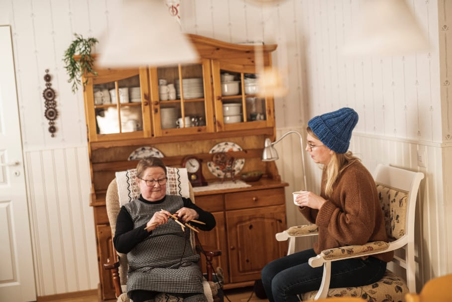
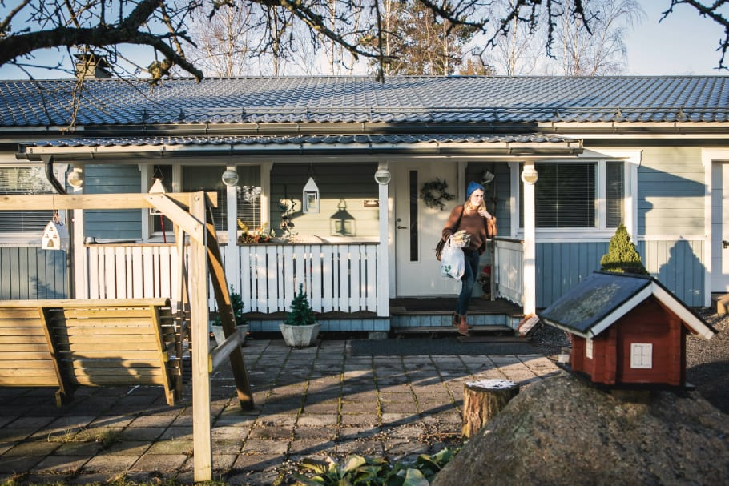
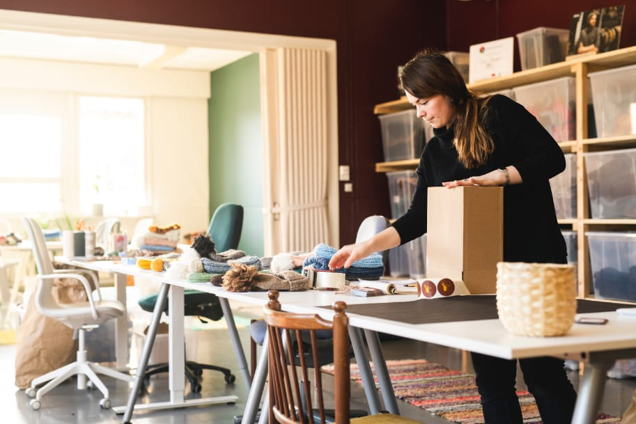
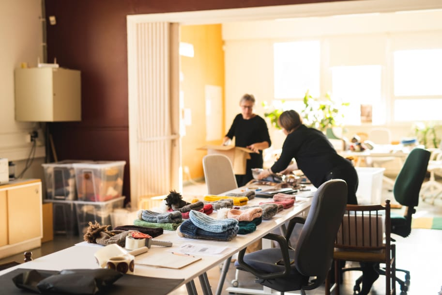

Piirongin päällä kello tikkaa puolta neljää, paksut kutimet juoksuttavat lankaa ja silmukat kietoutuvat toisiinsa yksi toisensa jälkeen. Uusi myssy on pian valmis.
Auran kunta, Aura.
Pirjo-Riitta Toivonen on yksi Myssyfarmin mummoista. Myssymummojen kutimista syntyvät myssyt, kaulurit, kaulaliinat ja
kravatit. Valmiit tuotteet ovat vahvaa laatua alusta loppuun. Materiaalina käytetty suomenlampaan villa on
ensiluokkaista ja paikallisilla luomutiloilla tuotettua. Myssymummojen työssä näkyy kokemus ja luja ammattitaito. Myös
tuotteiden paketointi pakkauskuoseineen on loppuun asti mietittyä. Myssyfarmi tuntee koko tuotantoketjun ja luottaa
siihen. Myssy-tuotteilla onkin elinikäinen takuu.
Tyttärensä vinkistä Pirjo-Riitta lähti mukaan ihan uteliaisuuttaan ja harrastusmielellä. Tytär oli näet kuullut, että
Myssyfarmi kaipaa kokeneita kutojia. Nyt myssyjen parissa on kulunut jo kolme vuotta. Tekemiensä myssyjen määrää
Pirjo-Riitta ei uskalla lähteä arvaamaan, mutta hänen käsissään uusi myssy valmistuu sukkelaan kahdessa tunnissa.
Kutomisvauhtiin toki vaikuttavat työn alla oleva malli sekä langan tai puikkojen paksuus.
Tiedättehän, että mummolassa on aina kahvipöydässä tarjottavaa? Itse leivottua tietenkin. Iltapäivän ratoksi
herkutellaan mehevällä mustikkapiirakalla ja juodaan yrttiteetä, jonka ainekset Pirjo-Riitta on itse kuivannut.
Ulkoilu luonnossa on Pirjo-Riitalle elämän eliksiiriä ja elämäntapa. Samalla koriin nousee kotiinviemisiä; vadelmat ja
mustikat lehtineen sekä maitohorsmaa teetä varten, nokkosta ja vuohenputkea pinaatin korvikkeeksi. Luonnosta löytyy
monenmoista kotikeittiössä hyödynnettävää. – Tänä vuonna ainoastaan korvasienet ovat jääneet syömättä, Pirjo-Riitta
naurahtaa.
Mummon kutoma villamyssy on taatusti kestävä. Se on uniikkia käsityötä ja tekijänsä signeeraama.
Myssymummon tarinoidessa kutimet kilkattavat. Eikä aikaakaan, kun myssy on jo signeerausta vaille valmis. Jokaisella
kutojalla on jo työssään oma käsialansa, mutta myssyn käyttäjä ei tietenkään sitä voi tunnistaa. Pirjo-Riitta kirjaa
oman nimensä pieneen tekstiililappuun kiinnitettäväksi myssyyn. Nimi auttaa myös ohjaamaan asiakkaiden palautteen ja
terveiset oikeaan osoitteeseen. Palautetta onkin mukava saada. Myssyfarmin emännän, Annan, kautta tulee toisinaan
terveiset Itä-Suomesta, joskus jopa toiselta puolelta maapalloa.

Mummokirjassa kerrotaan kutojille neuletöiden ohjeet, silmukkaluvut ja kerrokset. Myssyfarmilla kaikki osaavat kutoa ja
emäntä saa itsekin lisäoppia ja ohjeita mummoilta.
Mummokirja on katalogi, josta löytyy parhaillaan tuotannossa oleva mallisto ohjeineen ja värivaihtoehtoineen. Ohjeissa
kerrotaan muun muassa silmukkaluku ja pituus, jolloin jokainen myssymummojen valmistama tuote on samanlainen.
Omaleimaisen ja persoonallisen tunnun valmiiseen neuletyöhön tuo jokaisen myssymummon oma käsiala. Toisella silmukat
kietoutuvat toisiinsa tiukkaan, toisella höllemmin. Tasainen työn jälki kertoo monivuotisesta, vahvasta kokemuksesta.

Kiireelliset tilaukset eivät voi odottaa mummotapaamiseen asti. Tällöin emäntä hakee valmiit myssyt itse.
Myssyjen valmistus on suunniteltu niin, että jokainen myssymummo kutoo oman ehtimisensä mukaan. Mummot toki ovat todella
tuotteliaita. – Joskus on tullut määrätilauksiakin, joille on sovittu noutopäivä, kertoo Ritva Vuohijoki, toinen kokenut
myssymummo. Tuolloin Anna-emäntä käy noutamassa valmiit neuleet itse.
Esimerkkinä Ritva mainitsee tilaustyön, jossa oli määrä tehdä 10 pipoa keskiviikon ja tiistain välisenä aikana. Tehtävä
ei ole mitenkään mahdoton, sillä työteliäänä päivänä valmistuu neljä tai viisikin myssyä.
Tasainen kutomajälki kertoo vuosien kokemuksesta.
Pirjo-Riitan tavoin Ritvalla on koko elämän mittainen kokemus kutomisesta ja käsitöistä ylipäätään. Vuosien saatossa on
syntynyt jos jonkin näköistä neuletta tai ompelutyötä, eikä niitä kaikkia voi millään palauttaa mieleen. Muistissa ovat
kuitenkin aikoinaan itselle kudotut villatakit ja useat vauvannutut.
Kun omassa perheessä on väkeä jo neljännessä sukupolvessa, on vauvanpuvuille taas tarvetta. Itsetehty käsityö on
persoonallinen ja arvokas lahja, eikä vastaavaa vaatetta malliltaan tai ominaisuuksiltaan kaupasta saa hankittua. Isossa
suvussa riittää villasukille käyttäjiä, ja joulupukin pakettiin on kääritty isoja, virkattuja mattojakin.
Muiden myssymummojen lisäksi Ritvalla on ikioma kutojakaveri. Kutomiseen tarvitaan aina tuolin tai sohvan lisäksi rahi,
sillä bolognesen koira Lumihilla lepäilee ja torkkuu jalkojen päällä seuraten uskollisesti Ritvan edistymistä. Lumihilla
pitää huolen myös työn tauottamisesta, sillä koira vaatii välillä huomiota ja leikittäjää.
Valmiit myssyt tarkastetaan mummotapaamisessa. Myssyjen on vastattava laatukriteerejä.
Joka kolmas keskiviikko Myssyfarmin toimipisteessä Haverin koululla pistetään kaffet porisemaan jo hyvissä ajoin.
Tällöin kokoonnutaan Haverin koululle myssymummojen tapaamiseen. Kun kutojaringissä on noin 40 tekijää, ei kaikkiin ole
millään ehtinyt perinpohjin tutustumaan. Omalta kylältäkin on lähtijöitä tapaamiseen. – Neljästään on mukava mennä
kimppakyydillä vuorokertoina kuskia vaihtaen, Ritva kertoo.
Mummotapaaminen alkaa klo 12 ja usein kutojat saapuvat vähän oman aikataulunsa mukaan. Kun myssymummoille on
kerrottavana uutisia tai muita ilmoituksia, on yhteisen tilaisuuden tarkasta alkamisajasta informoitu etukäteen. Oven
suussa käteen lykätään vuorolaput. Toisinaan on nimittäin sen verran kova ruuhka valmiiden neuletöiden luovutukseen,
että ilman järjestysnumeroita kukaan ei pysy kärryillä siitä, kenen vuoro pitäisi olla seuraavaksi.

Myssyfarmilla työskentelevät tunnistavat mummot jo heidän käsialastaan; yhdelle sopii paremmin ohuempi lanka,
toiselle paksumpi. Tärkeintä on, että tarkat laatukriteerit täyttyvät valmiissa työssä.
Haverin koululla hoidetaan myös tuotteiden pakkaaminen. Myssyt asetellaan tyylikkäisiin, luonnonmukaisiin pakkauksiin ja
lähetys varustetaan verkkokaupan asiakkaiden tilauslapuilla. Sitten myssymummojen kutomat tuotteet ovatkin valmiita
lähetettäväksi uusille omistajilleen. Tilauksia Myssyfarmille tulee myös laajalta jälleenmyyjäverkostolta Suomessa ja
ulkomailla.

Mummotapaamisen jälkeen myssyt ovat valmiita pakattavaksi ja lähetetään maailmalle. Kaukaisimmat myssypaketit ovat
kulkeneet aina Australiaan ja Japaniin asti.
Tapaamisessa kutomiset kulkevat mummojen mukana ja työ jatkuu rupattelun lomassa. Viime päivien kuulumiset on nyt
vaihdettu ja pistetty pari neuvoa eteenpäin. Myssyfarmin mallistoon on suunnitteilla muutoksia, mutta niihin palataan
tarkemmin myöhemmissä tapaamisissa. Omatekemät myssyt jatkavat matkaa maailmalle ja kotiintuomisena kainalossa on uudet
lankavyyhdit.
Ritva aloittaa pian kutomaan seuraavaa myssyä. Kunhan ensin on käyty päiväkävelyllä Lumihillan kanssa.